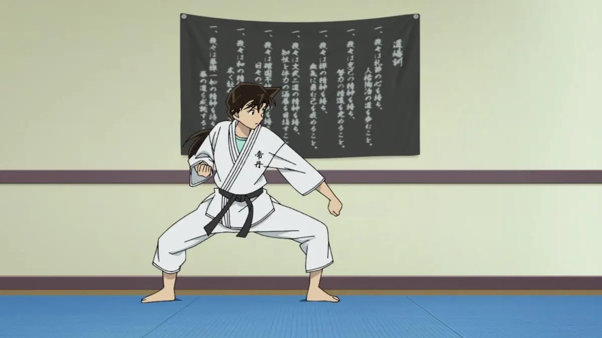

About Ran Mouri
Ran is the daughter of Kogoro Mouri, a private detective, and Eri Kisaki, a lawyer. Her parents separated when she was seven,[7] and one of her biggest goals is to get them back together. Her best friend besides Shinichi is her classmate Sonoko Suzuki, who often teases her about her relationship with Shinichi. Her other friends include Masumi Sera, Kazuha Toyama and Heiji Hattori.
Ran first met Shinichi back in Sakura class. Ran began liking Shinichi when she noticed he was wearing a paper name badge like her, so she wouldn't be bullied for being the only one without a proper badge. Unknown to her, her homeroom teacher was secretly planning to kidnap her, which Shinichi - with his father's help - foiled. Ran seemed unaware of the plot. The two soon became close friends ever since. (detectiveconanworld.com)
Shinichi and Ran (detectiveconanworld)
Ran Mouri's Characteristics
As teenage girl among cases, she's:
- caring
- patient
- kind
- nurturing
- highly valuing justice

Ran Mouri is Actually a Karate Athlete (IDN Times)
Ran Mouri's Friends and Family
In her life, Ran Mouri is surrounded by these wonderful people:
- Conan /Shinichi: A high school student detective whose body turned to a kid after getting drugged APTX-4689.
- Professor Agasa: The first person to know that Conan is Kudo. A bright-yet-clumsy professor whose inventions help Conan a lot but sometimes function differently than designed.
- Kogoro Mouri: Ran Mori's father, a private detective.
- Inspector Megure: A police inspector at Beika Police Station.
- Officer Wataru Takagi: Police officers at Beika Police Station.
- Genta, Ayumi, Mitsuhiko: Conan's classmates who like to play detectives but sometimes help more than the real police. They often lead Conan to cases in a bright peaceful day.
- Ai Haibara: A researcher who developed APTX-4689 that turned Kudo's body to Conan. She took the same drug deliberately to hide from the organization she once belonged to.
- Eri Kisaki: Ran's mother, also Kogoro's wife. A famous private lawyer.
- Yusaku Kudo: Shinichi's father, a wellknown mystery writer.
- Yukiko Kudo: Shinichi's mother, an actrist.
- Sonoko Suzuki: Ran's school friend. She comes from a typoon family. Her family's wealth and network sometime help solving the case.
- Heiji Hattori: Also a high school student detective. A friend of Kudo since they were kids.
- Kazuha Toyama: Heiji's close girl friend. Just like Ran and Kudo, they were also friends since kids.